InputCalendar의 입출력 서식 설정에 따라 값이 입력 필드에 표시되는 것을 비교한 예제입니다. 다음은 예제에서 사용한 입출력 서식과 관련된 속성입니다.
입력 서식 속성: ioFormat
출력 서식 속성: displayFormat
캘린더의 선택된 날짜 서식 속성: calendarDisplayFormat
(기본 설정) 입력 서식 : 연월일 / 출력 서식 : 연-월-일
입력 서식 : 월일연 / 출력 서식 : 월-일-연
입력 서식 : 연월일 / 출력 서식 : 월-일-연
입력 서식 : 월일연 / 출력 서식 : 연-월-일
예제 영역 '(기본 설정) 입력 서식 : 연월일 / 출력 서식 : 연-월-일'에서 테스트합니다.1
STEP 1: '연월일' 형식의 'value'를 할당합니다.
버튼 'setValue( '20241231' )'를 클릭합니다.
2
STEP 2: 실행 결과를 확인합니다.
InputCalendar에 'value'로 '20241231'가 할당됩니다.
InputCalendar에 '2024-12-31'가 표시됩니다.
Image 1.브라우저(Chrome) 실행 예시
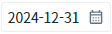
3
STEP 3: InputCalendar의 캘린더 아이콘를 클릭합니다.
4
STEP 4: 실행 결과를 확인합니다.
캘린더의 하단에 표시된 선택된 날짜가 '2024-12-31'로 표시됩니다.
Image 2.브라우저(Chrome) 실행 예시 - 캘린더
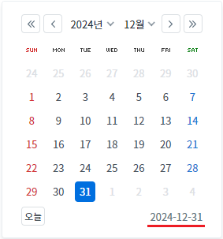
예제 영역 '입력 서식 : 월일연 / 출력 서식 : 월-일-연'에서 테스트합니다.1
STEP 1: '월일연' 형식의 'value'를 할당합니다.
버튼 'setValue( '12312024' )'를 클릭합니다.
2
STEP 2: 실행 결과를 확인합니다.
InputCalendar에 'value'로 '12312024'가 할당됩니다.
InputCalendar에 '12-31-2024'가 표시됩니다.
Image 3.브라우저(Chrome) 실행 예시
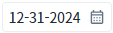
3
STEP 3: InputCalendar의 캘린더 아이콘을 클릭합니다.
4
STEP 4: 실행 결과를 확인합니다.
캘린더의 하단에 표시된 선택된 날짜가 '12-31-2024'로 표시됩니다.
Image 4.브라우저(Chrome) 실행 예시 - 캘린더
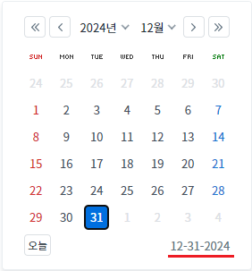
예제 영역 '입력 서식 : 연월일 / 출력 서식 : 월-일-연'에서 테스트합니다.1
STEP 1: '연월일' 형식의 'value'를 할당합니다.
버튼 'setValue( '20241231' )'를 클릭합니다.
2
STEP 2: 실행 결과를 확인합니다.
InputCalendar에 'value'로 '20241231'가 할당됩니다.
InputCalendar에 '12-31-2024'가 표시됩니다.
Image 5.브라우저(Chrome) 실행 예시
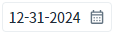
3
STEP 3: InputCalendar의 캘린더 아이콘을 클릭합니다.
4
STEP 4: 실행 결과를 확인합니다.
캘린더의 선택된 날짜가 '12-31-2024'로 표시됩니다.
Image 6.브라우저(Chrome) 실행 예시 - 캘린더
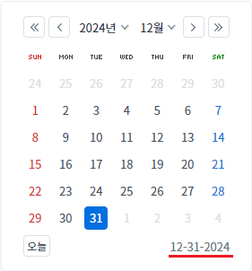
예제 영역 '입력 서식 : 월일연 / 출력 서식 : 연-월-일'에서 테스트합니다.1
STEP 1: '월일연' 형식의 'value'를 할당합니다.
버튼 'setValue( '12312024' )'를 클릭합니다.
2
STEP 2: 실행 결과를 확인합니다.
InputCalendar에 'value'로 '12312024'가 할당됩니다.
InputCalendar에 '2024-12-31'가 표시됩니다.
Image 7.브라우저(Chrome) 실행 예시
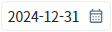
3
STEP 3: InputCalendar의 캘린더 아이콘을 클릭합니다.
4
STEP 4: 실행 결과를 확인합니다.
캘린더의 하단에 표시된 선택된 날짜가 '2024-12-31'로 표시됩니다.
Image 8.브라우저(Chrome) 실행 예시 - 캘린더
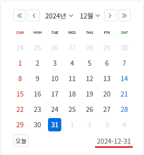
1
속성을 설정합니다.
[필수] ioFormat="MMddyyyy"
[defulat:yyyyMMdd] 사용자가 data를 입력하는 순서와 format 매칭시켜주는 기능이다.('y','M','d','H','m' 문자만 허용한다.)
[필수] displayFormat="MM-dd-yyyy"
input에 표현될 년월일에 대한 format으로 delimiter속성은 무시된다.
[필수] calendarDisplayFormat="MM-dd-yyyy"
InputCalendar의 displayFormat 속성과는 별도로 달력에 표시되는 날짜 자체의 displayFormat을 설정하고자 할 때 사용한다.
Image 9.웹스퀘어 스튜디오의 Component View - 속성 설정 예시
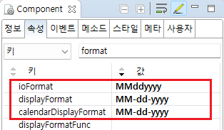
Example 1.Source
<!-- inputCalendar 의 소스 본문 예시 --> <w2:inputCalendar ioFormat="MMddyyyy" displayFormat="MM-dd-yyyy" calendarDisplayFormat="MM-dd-yyyy" calendarValueType="yearMonthDate" > </w2:inputCalendar>
1
속성을 설정합니다.
[필수] ioFormat="yyyyMMdd"
[defulat:yyyyMMdd] 사용자가 data를 입력하는 순서와 format 매칭시켜주는 기능이다.('y','M','d','H','m' 문자만 허용한다.)
[필수] displayFormat="MM-dd-yyyy"
input에 표현될 년월일에 대한 format으로 delimiter속성은 무시된다.
[필수] calendarDisplayFormat="MM-dd-yyyy"
InputCalendar의 displayFormat 속성과는 별도로 달력에 표시되는 날짜 자체의 displayFormat을 설정하고자 할 때 사용한다.
Image 10.웹스퀘어 스튜디오의 Component View - 속성 설정 예시
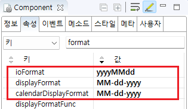
Example 2.Source
<!-- inputCalendar 의 소스 본문 예시 --> <w2:inputCalendar ioFormat="yyyyMMdd" displayFormat="MM-dd-yyyy" calendarDisplayFormat="MM-dd-yyyy" calendarValueType="yearMonthDate" > </w2:inputCalendar>
1
속성을 설정합니다.
[필수] ioFormat="MMddyyyy"
[defulat:yyyyMMdd] 사용자가 data를 입력하는 순서와 format 매칭시켜주는 기능이다.('y','M','d','H','m' 문자만 허용한다.)
[필수] displayFormat="yyyy-MM-dd"
input에 표현될 년월일에 대한 format으로 delimiter속성은 무시된다.
[필수] calendarDisplayFormat="yyyy-MM-dd"
InputCalendar의 displayFormat 속성과는 별도로 달력에 표시되는 날짜 자체의 displayFormat을 설정하고자 할 때 사용한다.
Image 11.웹스퀘어 스튜디오의 Component View - 속성 설정 예시
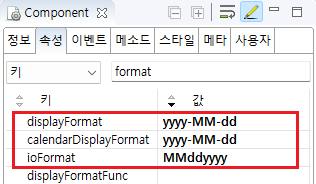
Example 3.Source
<!-- inputCalendar 의 소스 본문 예시 --> <w2:inputCalendar ioFormat="MMddyyyy" displayFormat="yyyy-MM-dd" calendarDisplayFormat="yyyy-MM-dd" calendarValueType="yearMonthDate" > </w2:inputCalendar>
calendarDisplayFormat
displayFormat
ioFormat
calendarDisplayFormatFunc
displayFormatFunc
setDisplayFormat( format )
setIoFormat( ioFormat , displayFormat )